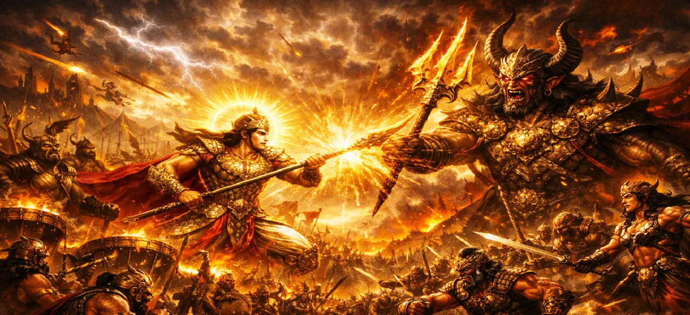

The Great Battle Begins
Chapter 24 of the Kumara Khanda chronicles the explosive commencement of the historic war between the divine celestial army led by Lord Skanda and the overwhelming demonic legions under Tārakāsura.
The universe holds its breath as the two forces collide, signaling the beginning of a struggle that will determine the fate of creation.
Chapter 24 Highlights & Full Overview
Explosive Start
The initial clash that shakes the foundation of the worlds.
Weapon Exchange
A terrifying hail of divine arrows and dark weaponry.
Forces Collide
The direct engagement between gods and powerful demonic warriors.
Cosmic Turmoil
The effects of the battle felt throughout the realms.
Ferocious Spirits
The intensity and courage displayed by soldiers on both sides.
Unfolding Chaos
The chaotic, rapid, and relentless pace of the war's start.
Core Topics Detailed in This Chapter
1. Commencement of the War
With the first light of dawn, the battlefield is charged with anticipation. Lord Skanda, the commander of the celestial army, gives the signal. The silence is broken by a resounding roar that emanates from both the godly and demonic ranks, marking the beginning of the monumental struggle.
2. The First Clash of Armies
The armies charge at each other, creating a cloud of dust that engulfs the sky. The initial collision is visceral, with warriors from both sides locked in hand-to-hand combat and relentless sword play. The ground trembles under the weight of thousands of marching feet and the fury of the combatants.
3. Strategies and Counter-Strategies
As the battle intensifies, commanders on both sides employ sophisticated tactics. Archery formations, flank attacks, and defensive maneuvers are utilized to gain an advantage. The demon commanders attempt to overwhelm the gods with sheer numbers and chaotic tactics, while the divine forces counter with precision and unity.
4. Divine Weapons vs. Demonic Illusions
The battle is not just of physical prowess but also of supernatural powers. The demons deploy dark, illusionary magic to confuse the celestial warriors, creating phantom warriors and shifting landscapes. In response, Lord Skanda and his divine allies manifest blinding, pure, and celestial weapons that shatter the illusions.
5. The Rising Intensity of Combat
The conflict reaches a new height as the mid-day sun blazes down upon the combatants. The air is filled with the sound of drums, trumpets, and the clashing of iron. Each moment brings increased pressure as both armies show no sign of surrender, determined to secure victory regardless of the cost.
6. Transition to Chapter 25 (The Heroic Deeds of Kumāra)
As the battlefield descends into a whirlwind of fury and bravery, the true power of the divine commander begins to shine. This leads into Chapter 25: **The Heroic Deeds of Kumāra**, where Lord Skanda demonstrates unparalleled valor and skill, turning the tide of the battle in favor of the gods.
Key Teachings and Spiritual Takeaways of Chapter 24
The Inevitability of Choice
Truth and falsehood must eventually confront each other.
The Power of Unity
Order and precision prevail over chaotic aggression.
Illusions vs. Light
Wisdom (light) effortlessly pierces the illusions created by ignorance.
Courage in Adversity
True heroism is tested when the pressure is at its peak.
Struggle for Balance
Cosmic conflict reflects the need to restore divine order.
Resilience
Perseverance is key to overcoming insurmountable obstacles.
Spiritual Reflection
Chapter 24 represents the initiation of our own battle against the negative tendencies within us. Just as the cosmic battle begins with a clash, our internal spiritual path often begins with a period of intense struggle between our higher aspirations and our lower, conditioned patterns. Recognizing this battle is the start of the hero's journey toward true liberation.
Living the Message of Chapter 24
Acknowledge the internal conflict as a natural part of spiritual growth.
Utilize the 'light' of your awareness to dissolve illusions and false beliefs.
Remain persistent and disciplined in the face of challenges, just as the divine army remains united.
Key Spiritual Concepts
The initiation of the righteous battle.
The destruction of illusory perceptions through light.
The divine courage required for the spiritual path.
Collective resolve to uphold righteousness.
The duality of struggle between forces of light and darkness.
Establishing the balance of divine order.
Chapter Summary
Kumara Khanda Chapter 24 captures the explosive start of the war between Lord Skanda’s celestial army and Tārakāsura’s demonic legions. It describes the massive clash, the use of divine and dark weaponry, and the mounting tension that sets the stage for the heroic exploits of the divine commander in the chapters to come.
Frequently Asked Questions
1. What is the central theme of Kumara Khanda Chapter 24?
Chapter 24 marks the explosive beginning of the war, detailing the initial clash, the ferocity of both the celestial and demonic armies, and the atmosphere of cosmic turmoil as the long-awaited battle commences.
2. How does the battle start?
The battle begins with a thundering exchange of weapons, arrows, and magical spells that shake the very foundation of the universe as the two mighty armies engage for the first time.
3. What chapter follows Chapter 24?
The next chapter is Chapter 25, titled 'The Heroic Deeds of Kumāra'.
“As the first arrows flew and the earth trembled, the Great Battle began, marking the inevitable confrontation between darkness and the divine.”
Continue Through Kumara Khanda
Chapter 24 details the beginning of the war. Continue to the next chapter, The Heroic Deeds of Kumāra.